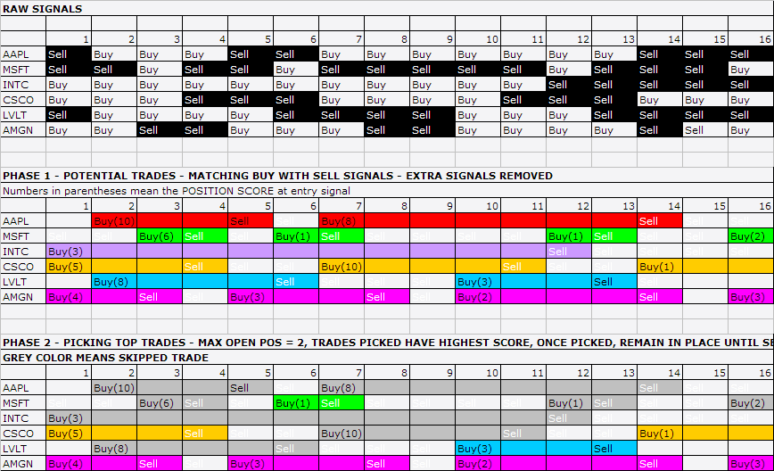
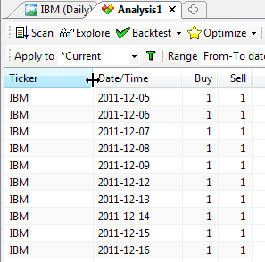
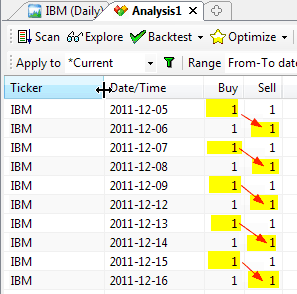
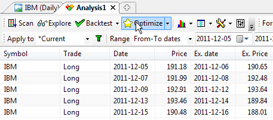
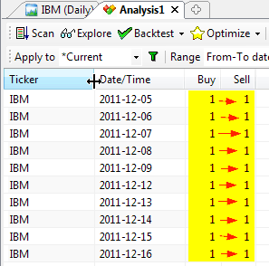
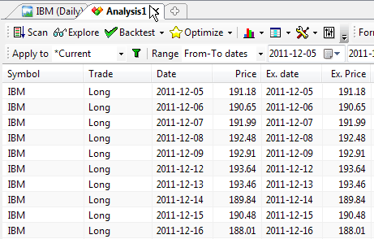
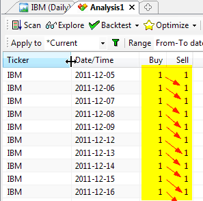
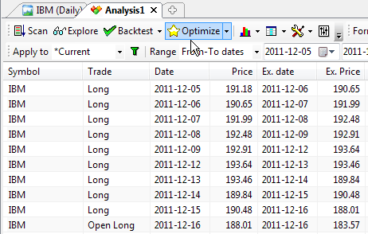

IMPORTANT: Please read the first Tutorial: Backtesting Your Trading Ideas article
The new backtester works at the PORTFOLIO LEVEL, it means that there is a single portfolio equity and position sizing refers to portfolio equity. Portfolio equity is equal to available cash plus sum of all simultaneously open positions at a given time.
AmiBroker's portfolio backtester lets you combine trading signals and trade-sizing strategies into simulations which exactly mimic the way you would trade in real time. A core feature is its ability to perform dynamic money management and risk control at the portfolio level. Position sizes are determined with full knowledge of what's going on at the portfolio level at the moment the sizing decision is made. Just as you do in reality.
HOW TO SET IT UP?
There are only two things that need to be done to perform portfolio backtest:
1. First, you need to have the formula that generates buy/sell/short/cover signals as described in "Backtesting Your Trading Ideas" article
2. You should define how many simultaneous trades you want to test and what position sizing algorithm you want to use.
SETTING UP MAXIMUM NUMBER OF SIMULTANEOUSLY OPEN TRADES
There are two ways to set the maximum number of simultaneously open trades:
1. Go to the Settings dialog, switch to Portfolio tab and enter the number in the Max. Open Positions field
2. Define the maximum in the formula itself (this overrides any setting in the Settings window) using SetOption function:
SetOption("MaxOpenPositions", 5 ); // This sets maximum number of open positions
to 5
SETTING UP POSITION SIZE
IMPORTANT: to enable more than one symbol to be traded, you have to add the PositionSize variable to your formula, so that less than 100% of funds are invested in a single security:
PositionSize = -25; // invest 25% of portfolio equity in single trade
or
PositionSize = 5000; // invest $5000 into single trade
There is quite a common way of setting both position size and maximum number of open positions so that equity is spread equally among trades:
PosQty = 5; // You can define here how many open positions you want
SetOption("MaxOpenPositions", PosQty );
PositionSize = -100/PosQty; // invest 100% of portfolio equity divided by max.
position count
You can also use more sophisticated position sizing methods. For example volatility-based position sizing (Van Tharp-style):
PositionSize = -2 * BuyPrice/(2*ATR(10));
That way you are investing 2% of PORTFOLIO equity in the trade, adjusted by the BuyPrice/2*ATR factor.
USING POSITION SCORE
You can use the new PositionScore variable to decide which trades should be entered if there are more entry signals on different securities than the maximum allowable number of open positions or available funds. In such a case, AmiBroker will use the absolute value of PositionScore variable to decide which trades are preferred. See the code below. It implements a simple MA crossover system, but with the additional flavor of preferring to enter trades on symbols that have a low RSI value. If more buy signals occur than available cash/max. positions, then the stock with lower RSI will be preferred. You can watch the selection process if you backtest with "Detailed log" report mode turned on.
The code below also includes an example of how to find the optimum number of simultaneously open positions using the new Optimization in Portfolio mode.
/*****
** REGULAR PORTFOLIO mode
** This sample optimization
** finds what is optimum number of positions open simultaneously
**
****/
SetOption("InitialEquity", 20000 );
SetTradeDelays(1,1,1,1);
RoundLotSize = 1;
posqty = Optimize("PosQty", 4, 1, 20, 1 );
SetOption("MaxOpenPositions", posqty);
// desired position size is 100% portfolio equity
// divided by PosQty positions
PositionSize = -100/posqty;
// The system is very simple...
// MA parameters could be optimized too...
p1 = 10;
p2 = 22;
// simple MA crossover
Short=Cross( MA(C,p1) , MA(C,p2) );
Buy=Cross( MA(C,p2) , MA(C,p1) );
// always in the market
Sell=Short;
Cover=Buy;
// now additional score
// that is used to rank equities
// when there are more ENTRY signals that available
// positions/cash
PositionScore = 100-RSI(); // prefer stocks that have low RSI;
AmiBroker 5.0 offers 6 different backtest modes:
All "regular" modes use buy/sell/short/cover signals to enter/exit trades, while "rotational" mode (aka "ranking/switching" system) uses only position score and is described later.
Backtest modes are switchable using SetBacktestMode() AFL function.
The difference between "regular" modes is how repeated (also known as "redundant" or "extra") entry signals are handled. An "extra" entry signal is the signal that comes AFTER initial entry but before the first matching exit signal.
In the regular mode, the default one, redundant entry signals are removed as
shown in the picture below.

As you can see, Buy-Sell signal pairs are matched and treated as a TRADE. If a trade is NOT entered on first entry signal due to a weak rank, not enough cash, or reaching the maximum open position count, subsequent entry signals are ignored until a matching exit signal. After an exit signal, the next entry signal will be a possible candidate for entering a trade. The process of removing excess signals occurring after the first buy and matching sell (and short-cover pair, respectively) is the same as the ExRem() AFL function provides. To use regular mode, you don't need to call the SetBacktestMode function at all, as this is the default mode.
You may or may not consider removing extra signals desirable. If you want to act on ANY entry signal, you need to use the second mode - backtestRegularRaw. To turn it on you need to include this line in the code:
// signal-based backtest,
redundant (raw) signals are NOT removed, only one position per symbol allowed
SetBacktestMode( backtestRegularRaw
);
It does NOT remove redundant entry signals and will act on ANY entry, provided that it is scored highly enough and there is cash available and the maximum number of open positions is not reached. It will, however, allow only ONE OPEN POSITION per symbol at any given time. It means that if a long trade is already open, and later in the sequence, an extra buy signal appears, it will be ignored until a "sell" signal comes (short-cover signals work the same way). Note that you can still use sigScaleIn/sigScaleOut to increase or decrease the size of this existing position, but it will appear as a single line in the backtest result list.
If you want ALL repeated entry signals to be acted upon and allow multiple separate positions on the same symbol without a scaling in/out effect (so multiple positions on the same symbol open simultaneously appear as separate lines in the backtest report), you need to use backtestRegularRawMulti mode by adding the following line to the code:
SetBacktestMode(
backtestRegularRawMulti );
In this mode MULTIPLE positions per symbol will be opened if a BUY/SHORT signal is "true" for more than one bar and there are free funds available. Sell/Cover signals exit all open positions on a given symbol, Scale-In/Out work on all open positions of a given symbol at once.
Remark: The remaining modes are for advanced users only
Raw2 modes are "special" for advanced users of the custom backtester. They are only useful if you do custom processing of exit signals in a custom backtester procedure. They should NOT be used otherwise, because of the performance hit and memory consumption Raw2 modes cause.
The common thing between Raw and Raw2 modes is that they both do NOT remove excess ENTRY signals. The difference is that Raw modes remove excess EXIT signals, while Raw2 modes do NOT.
In Raw2 modes all exit signals (even redundant ones) are passed to the second
phase of backtest just in case that you want to implement a strategy that skips the first exit. Let's suppose that you want to exit on some condition from the
first phase but only in certain hours, or after a certain number of bars in a trade,
or only when a portfolio equity condition is met. Now, you can do that in Raw2
modes.
Note that Raw2 modes can get significantly slower when you are using custom
backtester code that iterates through signals as there can be zillions of exit
signals in the lists, even for symbols that never generated any entry signals,
therefore, it is advised to use it only when absolutely necessary. Raw2 modes
are also the most memory-consuming. Note also that if you run the system WITHOUT
a custom backtest procedure, there should be no difference between Raw and Raw2
modes (other than speed & memory
usage), as the first matching exit signal is what is used by default.
ROTATIONAL TRADING
Rotational trading (also known as fund-switching, or scoring and ranking) is possible too. For more information, see the description of the EnableRotationalTrading function.
HOLDMINBARS and EARLY EXIT FEES
(Note that these features are available in the portfolio-backtester only and not compatible with the old backtester or Equity() function)
HoldMinBars is a feature that disables exits during a user-specified number of
bars even if signals/stops are generated during that period.
Please note that IF, during the HoldMinBars period, ANY stop is generated, it is ignored.
Also, this period is ignored when it comes to the calculation of trailing stops (new highest highs and drops below trailing stops generated during HoldMinBars
are ignored).This setting, similar to EarlyExitFee/EarlyExitBars, is available
on a per-symbol basis (i.e., it can be set to a different value for each symbol).
Example:
SetOption("HoldMinBars", 127 );
Buy=BarIndex()==0;
Sell=1;
// even if sell signals are generated each day,
//they are ignored until bar 128
An early exit (redemption) fee is charged when a trade is exited during the first N
bars since entry.
The fee is added to the exit commission, and you will see it in the commissions
reported, for example, in the detailed log. However, it is NOT reflected in the portfolio
equity unless a trade really exits during the first N bars - this is to prevent affecting
drawdowns if a trade was NOT exited early.
// these two new options
can be set on per-symbol basis
// how many bars (trading days)
// an early exit (redemption) fee is applied
SetOption("EarlyExitBars", 128 );
// early redemption fee (in percent)
SetOption("EarlyExitFee", 2 );
(Note: 180 calendar days is 128 or 129 trading days.)
// how to set it up on
per-symbol basis?
// it is simple - use 'if' statement
if( Name()
== "SYMBOL1" )
{
SetOption("EarlyExitBars", 128 );
SetOption("EarlyExitFee", 2 );
}
if( Name()
== "SYMBOL2" )
{
SetOption("EarlyExitBars", 25 );
SetOption("EarlyExitFee", 1 );
}
In addition to HoldMinBars and EarlyExitBars, there are sibling features (added in
4.90) called
HoldMinDays and EarlyExitDays that work with calendar days instead
of data bars. So,
we can rewrite the previous examples to use calendar days accurately:
// even if sell signals are generated each day,
//they are ignored until 180 calendar days since
entry
SetOption("HoldMinBars", 180 );
Buy=BarIndex()==0;
Sell=1;
// these
two new options can be set on per-symbol basis
// how many CALENDAR DAYS
// an early exit (redemption) fee is applied
SetOption("EarlyExitDays", 180 );
// early redemption fee (in percent)
SetOption("EarlyExitFee", 2 );
(Note: 180 calendar days is 128 or 129 trading days.)
// how to set it up on
per-symbol basis?
// it is simple - use 'if' statement
if( Name()
== "SYMBOL1" )
{
SetOption("EarlyExitDays", 180 );
SetOption("EarlyExitFee", 2 );
}
if( Name()
== "SYMBOL2" )
{
SetOption("EarlyExitDays", 30 );
SetOption("EarlyExitFee", 1 );
}
RESOLVING SAME-BAR, SAME-SYMBOL SIGNAL CONFLICTS
It is possible for the system to generate on the very same symbol both an entry and an exit signal at the very same bar. Consider, for example, this very simple system that generates buy and sell signals on every bar:
Buy = 1; If you add an exploration code to it to show the signals:
Sell = 1;
AddColumn(Buy,"Buy", 1.0 );
AddColumn(Sell, "Sell", 1.0 );
Filter = Buy OR Sell;
you will get the following output (when you press Explore):

Now, because of the fact that entry and exit signals do NOT carry any timing information, so you don't know which signal comes first, there are three ways such conflicting same-bar, entry and exit signals may be interpreted:
Since, as we mentioned already, buy/sell/short/cover arrays do not carry timing information, we have to somehow tell AmiBroker how to interpret such conflict. One would think that it is enough to set the buyprice to open and the sellprice to close to deliver timing information, but it is NOT the case. Price arrays themselves DO NOT provide timing information either. You may ask why. This is quite simple. First of all, trading prices do not need to be set to exact open/close. In several scenarios you may want to define buyprice as open + slippage and sellprice as close - slippage. Even if you do use exact open and close, it happens quite often that open is equal to close (like in a doji candlestick), and then there is no way to find out from price alone whether it means close or open. So again buyprice/sellprice/shortprice/coverprice variables DO NOT provide any timing information.
The only way to control how same-bar, same-symbol entry/exit conflicts are resolved is via the AllowSameBarExit option and the HoldMinBars option.
Scenario 1. Only one signal per symbol is taken at any bar
This scenario is used when the AllowSameBarExit option is set to False (turned off).
In this case it does not really matter whether exit or entry was the first within a single bar. It is quite easy to understand: on any bar only one signal is acted upon. So if we are flat on a given symbol, then an entry signal is taken (with a buy signal taking precedence over a short), other signals are ignored, and we move to the next bar. If we are long on a given symbol, then a sell signal is taken, the trade is exited, and we move to the next bar, ignoring other signals. If we are short on a given symbol, then a cover signal is taken, the trade is exited, and we move to the next bar again, ignoring other signals. If we are in the market but there is no matching exit signal - the position is kept and we move to the next bar.
SetOption("AllowSameBarExit", False );
Buy = 1;
Sell = 1;
The following pictures show which signals are taken and the resulting trade list. All trades begin on one day and end on the next day. A new trade is opened on the following day.


Scenario 2. Both an entry and an exit signal are used and an entry signal precedes an exit signal
This scenario is used when AllowSameBarExit option is set to True (turned on) and HoldMinBars is set to zero (which is the default setting).
In this case we simply act on both signals immediately (same-bar). So if we are flat on a given symbol, then an entry signal is taken (with a buy signal taking precedence over a short), but we do not move to the next bar immediately. Instead, we check if exit signals also exist. If we are long on a given symbol, then a sell signal is taken. If we are short on a given symbol, then a cover signal is taken. Only after processing all signals do we move to the next bar.
SetOption("AllowSameBarExit", True );
Buy = 1;
Sell = 1;
The following pictures show which signals are taken and the resulting trade list. As we can see, this time all signals are acted upon and we have a sequence of single-bar trades.


Scenario 3. Both signals are used and an entry signal comes after an exit signal.
This scenario is used when AllowSameBarExit option is set to True (turned on) and HoldMinBars is set to 1 (or more).
In this case we simply act on both signals in a single bar, but we respect the HoldMinBars = 1 limitation, so a trade that was just opened cannot be closed on the same bar. So if we are long on a given symbol, then a sell signal is taken. If we are short on a given symbol, then a cover signal is taken. We don't move to the next bar yet. Now, if we are flat on a given symbol (possibly just exited a position on this bar exit signal), then an entry signal is taken, if any (with a buy signal taking precedence over a short) and then we move to the next bar.
SetOption("AllowSameBarExit", True );
SetOption("HoldMinBars", 1 );
Buy=1;
Sell=1;
The following pictures show which signals are taken and the resulting trade list. As we can see, again all signals are acted upon, BUT... trade duration is longer - they are not same-bar trades - they all span overnight.


How does it work in a portfolio case?
The mechanism is the same regardless of whether you test on a single symbol or multiple symbols. First, same-bar conflicts are resolved on every symbol separately, in the way described above. Then, when you test on multiple symbols, the resulting trade candidates are subject to scoring by the PositionScore described in an earlier part of this document.
Support for market-neutral, long-short balanced strategies
An investment strategy is considered market neutral if it seeks to entirely avoid some form of market risk, typically by hedging. The strategy holds long/short equity positions, with long positions hedged with short positions in the same and related sectors, so that the equity market-neutral investor should be little affected by sector- or market-wide events. This places, in essence, a bet that the long positions will outperform their sectors (or the short positions will underperform) regardless of the strength of the sectors.
In version 5.20 the following backtester options have been added to simplify implementing market-neutral systems: SeparateLongShortRank, MaxOpenLong, MaxOpenShort.
SeparateLongShortRank backtester option
To enable separate long/short ranking, use:
SetOption("SeparateLongShortRank", True );
When separate long/short ranking is enabled, the backtester maintains TWO separate "top-ranked" signal lists, one for long signals and one for short signals. This ensures that long and short candidates are independently ranked even if the position score is not symmetrical (for example when long candidates have very high positive scores while short candidates have only fractional negative scores). That contrasts with the default mode, where only the absolute value of the PositionScore matters, therefore, one side (long/short) may completely dominate ranking if score values are asymmetrical.
When SeparateLongShortRank is enabled, in the second phase of the backtest, two separate ranking lists are interleaved to form a final signal list by first taking the top-ranked long, then the top-ranked short, then the 2nd top-ranked long, then the 2nd top-ranked short, then the 3rd top-ranked long and the 3rd top-ranked short, and so on... (as long as signals exist in BOTH long/short lists; if there are no more signals of a given kind, then remaining signals from either the long or short lists are appended).
For example:
Entry signals (score): ESRX=Buy(60.93), GILD=Short(-47.56), CELG=Buy(57.68),
MRVL=Short(-10.75), ADBE=Buy(34.75), VRTX=Buy(15.55), SIRI=Buy(2.79)
As you can see, short signals get interleaved between long signals even though their absolute values of scores are smaller than the corresponding scores of long signals. Also, there were only 2 short signals for that particular bar, so the rest of the list shows long signals in order of position score. Although this feature can be used independently, it is intended to be used in combination with the MaxOpenLong and MaxOpenShort options.
MaxOpenLong/MaxOpenShort backtester options
MaxOpenLong - limits the number of LONG positions that can be opened simultaneously
MaxOpenShort - limits the number of SHORT positions that can be opened simultaneously
Example:
SetOption("MaxOpenPositions", 15 );
SetOption("MaxOpenLong", 11 );
SetOption("MaxOpenShort", 7 );
The value of ZERO (default) means no limit. If both MaxOpenLong and MaxOpenShort are set to zero (or not defined at all), the backtester works the old way - there is only a global limit active (MaxOpenPositions) regardless of the type of trade.
Note that these limits are independent of the global limit (MaxOpenPositions). This means that MaxOpenLong + MaxOpenShort may or may not be equal to MaxOpenPositions.
If MaxOpenLong + MaxOpenShort is greater than MaxOpenPositions then the total number of positions allowed will not exceed MaxOpenPositions, and individual long/short limits will also apply. For example, if your system's MaxOpenLong is set to 7 and MaxOpenShort is set to 7 and MaxOpenPositions is set to 10, and your system generated 20 signals: 9 long (highest ranked) and 11 short, it will open 7 long and 3 shorts.
If MaxOpenLong + MaxOpenShort is smaller than MaxOpenPositions (but greater than zero), the system won't be able to open more than (MaxOpenLong+MaxOpenShort).
Please also note that MaxOpenLong and MaxOpenShort only cap the number of open positions of a given type (long/short). They do NOT affect the way ranking is made. I.e., by default, ranking is performed using the ABSOLUTE value of the PositionScore.
If your position score is NOT symmetrical, this may mean that you are not getting
the desired top-ranked signals from one side.
Therefore, to fully utilize MaxOpenLong and MaxOpenShort in rotational, balanced ("market neutral") long/short systems
it is desired to perform SEPARATE ranking for long signals and short signals.
To enable separate long/short ranking, use:
SetOption("SeparateLongShortRank", True );
See Also:
Backtesting Your Trading Ideas article.
Backtesting Systems for Futures Contracts
article.
Using the AFL Editor section of the guide.